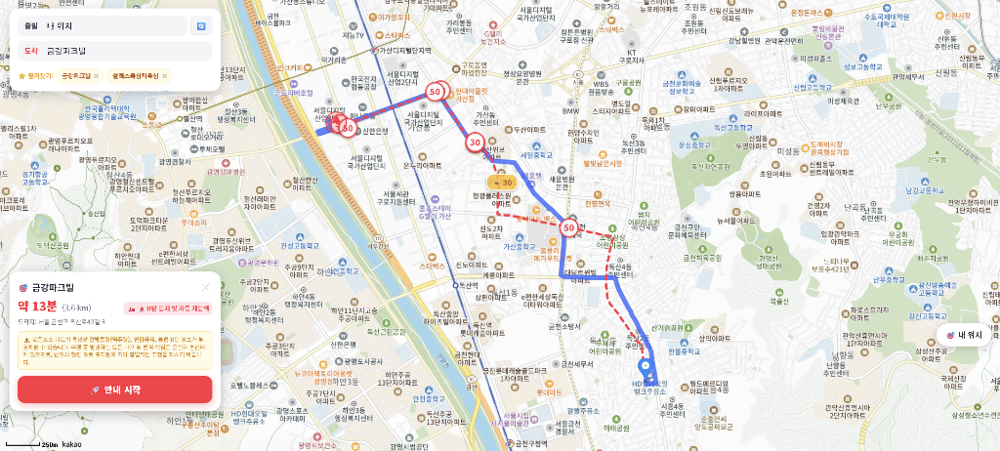

극한의 배달 효율을 위한 이륜차 전용 하이브리드 내비게이션
Frontend Engineer (1인 개발)
핵심 구현 기술
• 카카오 합법로 + BRouter 숏컷 듀얼 라우팅
• HTML5 Geolocation 기반 20m 이탈 즉각 감지
• API 트래픽을 방어하는 수동 섀도잉 재탐색
안전하지만 느린 대기업 내비게이션의 한계를 극복하기 위한 오픈소스(BRouter) 하이브리드 결합
배달 기사들은 일반 자동차 내비게이션을 기피합니다. 큰길 위주로만 안내하여 배달 효율(시간)이 극도로 떨어지기 때문입니다.
두 엔진의 장점만 취하기 위해, 서로 다른 API를 동시에 호출하여 지도 위에 겹쳐 그리는(Layering) UI/UX를 설계했습니다.
카카오 합법 경로(파란선)와 BRouter 극한 숏컷(빨간 점선)이 교차하며 듀얼 방어운전 마커가 렌더링된 모습

1. 시각적 오버레이 (Visual Overlay)
하나의 지도 캔버스 위에 두 API 데이터를 강제로 덮어씌웠습니다. 카카오맵 API의 굵은 파란 실선(안전 합법로)을 바탕에 깔고, BRouter의 빨간 점선(골목길 위주)을 겹쳐 주행 직관성을 극대화했습니다.
2. 듀얼 방어운전 레이더망
지도에 띄워진 단속 카메라(50, 30 마커)는 공공데이터 JSON 파일을 직접 가공하여, 파란선과 빨간선 양쪽 경로 모두의 반경 30~50m 이내를 스캔하고 듀얼 필터링으로 렌더링해 낸 정교한 결과물입니다.
3. 직관적인 UI/UX 설계
안내 시작 시 1~2초마다 내 위치를 갱신해 주행 방향을 화살표로 표시합니다. 두 선을 모두 20m 이상 이탈하면 즉각 자동 재탐색을 실시하며, 주행 중 능동적으로 경로를 변경하고 싶을 때를 대비해 '수동 재탐색' 버튼을 활성화했습니다.
오토바이의 기동성에 맞춘 초정밀 GPS 트래킹 및 "어느 선을 타더라도 정상 참작하는" 다중 허용 반경 알고리즘
기존 내비게이션은 '하나의 선'만 추적합니다. 하지만 듀얼 라우팅 환경에서 기사님이 '빨간 선(숏컷)'이 위험해 보여서 '파란 선(카카오 안전로)'을 골라 탔음에도 불구하고, 앱은 "빨간 선에서 멀어졌다!"며 경로 이탈 경고를 울리는 논리적 버그가 발생했습니다.
내 위치에서 '빨간 선'과 '파란 선'까지의 직교 거리를 각각 계산한 뒤, 둘 중 하나라도 20m 이내에 있다면 정상 주행으로 인정(Math.min)하는 다중 센서망을 구축했습니다. 일반 자동차(40m)보다 2배 예민한 20m 기준을 적용해 골목길 엇나감에 즉각 반응합니다.
// navigator.geolocation.watchPosition 1초 주기 콜백
if (isNavigatingRef.current && !isReroutingRef.current) {
// 1. 빨간 선(BRouter 숏컷)과 내 위치 간의 최단 거리 측정
const distBRouter = getDistanceToPath(lat, lng, routePathRef.current);
// 2. 파란 선(카카오 안전로)과 내 위치 간의 최단 거리 측정
const distKakao = routePathKakaoRef.current.length > 0
? getDistanceToPath(lat, lng, routePathKakaoRef.current)
: Infinity;
// 3. 두 선 중 나와 가장 '가까운' 거리를 최종 이탈 잣대로 사용
const minDistance = Math.min(distBRouter, distKakao);
// 오토바이 특화: 20미터(건물 반 동)만 완전히 벗어나도 즉각 생명선(하드 재탐색) 발동
if (minDistance > 20) {
handleAutoReroute(lat, lng, false); // false = "경로를 이탈하여..." 음성 출력
}
}무거운 교차점(Intersection) 연산 렌더링 트릭으로 대체하고 수동 버튼으로 카카오 API 한도를 방어하는 실무적 설계
두 경로가 겹치다가 갈라지는 모습을 Turf.js 같은 무거운 지리 연산으로 구하지 않고, CSS zIndex와 strokeStyle 속성만으로 착시(Branching) 효과를 구현했습니다. 바닥엔 굵은 파란 선을 깔고 위에는 얇은 빨간 점선을 얹어 퍼포먼스를 극대화했습니다.
하나의 선을 잘 타고 있을 때 버려진 다른 선을 무음으로 갱신해주는 자동 섀도잉 기획은 너무 많은 API 호출(OOM 위험)을 유발했습니다. 이를 제거하고 '수동 재탐색' 버튼을 배치하여 카카오 일일 10만 건 한도를 방어했습니다.
// 하단 네비게이션 패널 랜더링 부 (API 과부하 방어용 수동 버튼)
<div className="action-row">
<button type="button"
className="reroute-btn"
onClick={handleManualReroute}>
🔄 수동 재탐색
</button>
<button type="button" className="stop-nav-btn">주행 종료</button>
</div>
// 수동 재탐색 핸들러: 필요할 때만 호출하여 트래픽 낭비(비용) 완벽 차단
const handleManualReroute = () => {
if (!currentPosRef.current) return;
speakVoiceGuide("수동으로 경로를 재탐색합니다."); // TTS 피드백
// 현재 좌표를 기준으로 카카오/BRouter 듀얼 API 1회만 호출
handleAutoReroute(currentPosRef.current.lat, currentPosRef.current.lng, false);
};오픈소스 API의 폐쇄적 보안 정책(MD5 Hash)을 뚫어내고, 오토바이만의 극한 숏컷(계단/일방통행 배제)을 뽑아내는 프로파일 튜닝
BRouter API는 커스텀 프로파일(Custom Profile)을 요청할 때 파라미터 변조를 막기 위해 독자적인 MD5 Hash 파라미터를 요구했습니다.
하지만 프론트엔드 단독 환경에서는 백엔드 프록시 없이 이를 뚫어야 했고, 오픈소스 코드를 역엔지니어링하여 JavaScript 환경에서 동일한 해시를 생성하는 알고리즘(String.prototype.replace / unescape / encodeURIComponent 콤보)을 이식해 보안 검증을 완벽히 우회했습니다.
// 오토바이에게 치명적인 도로(계단, 보행자도로)를 완전히 배제하는 페널티 튜닝 (profile)
const customProfile = `
assign initialcost = 0
assign defaultaccess = true
assign nodeaccesspenalty = 0
assign turninstructionmode = 1
---
assign costfactor
switch or highway=steps highway=pedestrian 10000
switch highway=motorway 10000
1
`;
// BRouter 서버의 독자적인 보안 해시(MD5)를 프론트엔드에서 강제 생성하여 CORS/보안 정책 우회
const raw = customProfile.replace(/\r\n/g, '\n');
const encoded = unescape(encodeURIComponent(raw));
const customProfileHash = md5(encoded);
const apiUrl = `https://brouter.de/brouter?lonlats=...&profile=custom_${customProfileHash}`;API 폭주를 막는 목적지 가드(Guard) 로직과 듀얼 라우팅(보이스 스위칭)의 완벽한 시너지
[현상] 아파트 단지나 대형 주차장 등 목적지 부근 오프로드로 진입 시, 도로 위에 그려진 경로와 GPS 간의 거리가 20m 이상 벌어져 앱이 '경로 이탈'로 오판하고 무한 재탐색(API 폭주) 루프에 빠지는 치명적 엣지 케이스를 야외 주행 테스트 중 발견했습니다.
[해결] 현재 위치와 '최종 목적지' 간의 거리를 1초마다 실시간 계산(distToDest)하여, 반경 100m 이내 진입 시 이를 '도착 임박/주차 탐색' 상태로 인지하고 재탐색(Reroute) 로직을 강제 차단하는 방어 코드를 주입해 무한 루프를 완벽히 해결했습니다.
[현상] 국가 안보 규제로 정밀 지도를 반출할 수 없는 지형 특성상, 해외 맵(빨간선)은 중앙분리대나 일방통행을 인지하지 못하고 물리적으로 불가능한 직진 횡단이나 역주행을 안내하는 치명적 데이터 결함이 있었습니다.
[해결] 이를 '듀얼 라우팅'으로 기획적 승화(극복)를 이루어 냈습니다. 라이더가 중앙분리대 오류를 눈으로 확인하고 카카오 파란선으로 우회하거나 횡단보도를 건너가면, 수학적 방위각 계산으로 구동되는 '다이내믹 보이스 스위칭' 엔진이 경로 변경을 즉시 눈치채고 카카오 안전 경로 음성 안내로 자동 교체해 주도록 설계했습니다.